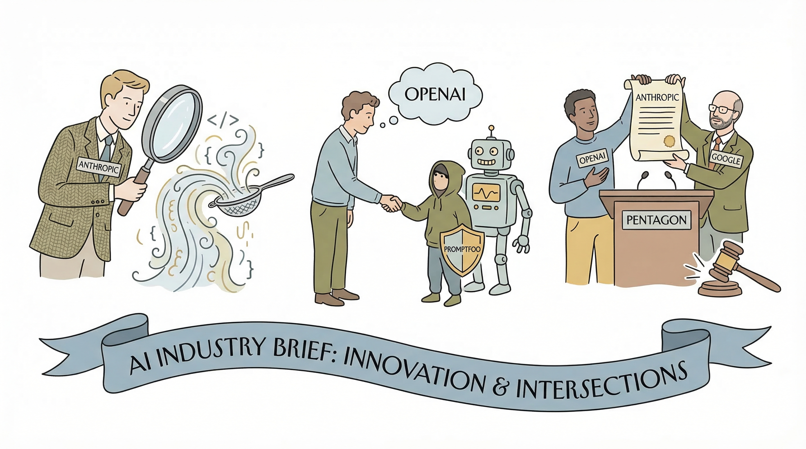

Anthropic推出代码审查工具，自动分析AI生成代码并标记逻辑错误。
两克伴AIGC日报
2026-03-10 星期二

本期关注：Anthropic推代码审查工具、OpenAI收购Promptfoo强化代理安全并推出Codex漏洞修复工具，微软集成Claude加强AI代理功能，行业聚焦AI安全与代理技术深化布局。
📰 行业动态
OpenAI收购Promptfoo，加强AI代理的安全性。
OpenAI和Google员工支持Anthropic对五角大楼的诉讼。
微软将Anthropic的Claude模型集成到其产品中，加强AI代理功能。
🔥 今日焦点
OpenAI近期收购了开源AI红队工具Promptfoo，该工具已被超过125,000名开发者和30多家财富500强公司采用。此次收购标志着OpenAI在AI应用安全领域的重大布局。Promptfoo的技术将被整合到OpenAI的企业级代理平台Frontier中，该平台于一个月前刚刚推出。此次收购对AI领域具有重要意义，它不仅展示了OpenAI在AI安全领域的雄心，也为AI安全研究提供了新的工具和视角。随着AI技术的不断发展，AI安全成为了一个日益重要的议题，OpenAI的这一举措将推动AI安全领域的进一步发展。
---
OpenAI近日推出了一款名为Codex Security的新AI代理，旨在帮助开发者大规模地识别和缓解复杂风险。这款AI代理的核心功能是通过分析代码，自动检测潜在的安全漏洞，并提供修复建议。这一创新举措对于AI领域具有重要意义。
在当前数字化时代，软件安全风险日益凸显，而传统的安全检测方法往往效率低下，难以应对日益复杂的攻击手段。Codex Security的出现，为开发者提供了一种高效、智能的安全解决方案。它能够快速识别代码中的安全隐患，帮助开发者及时修复漏洞，从而降低系统被攻击的风险。
2026年，AI领域核心战场正从大模型算力比拼转向AI智能体落地执行。OpenClaw（业内昵称“龙虾”）凭借颠覆性体验，成为全球增长最快的开源AI项目之一。这款开源AI数字员工框架，被形象地比作全天候主动型“超级实习生”，可24小时在线主动推进任务。深圳千人“龙虾聚会”聚焦实战落地，为AI硬件未来走向提供观察样本。这场盛会预示着AI硬件五大潜在趋势：1. AI硬件将更注重实战落地；2. 开源AI项目将引领行业发展；3. AI硬件将走向个性化定制；4. AI硬件将具备更强的自主学习能力；5. AI硬件将更加注重用户体验。
📚 深度长文
本文深入探讨了LangChain团队如何构建一款GTM（Go-to-Market）代理，该代理显著提升了销售转化率，将转化率提高了250%，同时为每位销售代表节省了每月40小时的宝贵时间。文章详细阐述了构建过程，包括技术选型、模型训练、优化策略等关键环节。作者揭示了如何通过深度学习技术，实现销售自动化，提高销售效率。此外，文章还分享了LangChain在构建过程中积累的独特见解和经验，为AI从业者提供了宝贵的参考。阅读本文，您将了解如何利用AI技术提升企业销售业绩，为您的职业生涯增添亮点。
---
本文探讨了Granite 4.0 1B Speech，这是一种紧凑型、多语言、专为边缘计算设计的AI语音模型。文章深入分析了该模型的核心特点，包括其独特的压缩技术、多语言支持以及边缘计算的优化。作者通过详细的实验数据和案例分析，展示了Granite 4.0 1B Speech在语音识别、语音合成和语音翻译等方面的卓越性能。文章还探讨了该模型在降低计算资源消耗、提高实时性和降低延迟方面的优势。对于AI从业者而言，本文不仅提供了对Granite 4.0 1B Speech的全面了解，还揭示了其在边缘计算领域的重要应用价值，对于推动AI技术的发展具有重要意义。
---
本文深入探讨了2026年GitHub上最受欢迎的AI项目，分析了这些项目的功能、重要性以及它们在AI领域中的地位。文章以独特的视角，详细解析了这些项目如何影响当前AI技术的发展趋势，并揭示了它们在推动AI创新中的关键作用。通过对比分析，文章揭示了这些项目在算法、应用场景和实现技术上的创新之处，为读者呈现了一个全面而深入的AI技术图谱。阅读本文，AI从业者不仅能了解最新的AI技术动态，还能从中获得宝贵的行业洞察和未来发展趋势的预测，对于提升自身技术水平和行业竞争力具有重要意义。
📄 重点论文
**核心贡献**: 提出了一种基于片段的内存系统Memento，用于LLM代理，通过将记忆视为原子化的、类型化的片段来避免信息丢失，解决了现有方法中信息丢失或引入噪声的问题。
**与AI Agent的关联**: 为AI Agent提供了持久记忆的能力，有助于提高代理在复杂环境中的学习和决策能力，对多智能体系统和工具使用等领域具有实际价值。
🛠️ 产品推荐
Lurk是一款针对AI工具的本地代理，旨在解决冷启动问题。它能够为Claude Code、Cursor、ChatGPT等AI工具提供上下文信息，帮助用户在对话中无需从头开始。通过集成MCP连接器，Lurk可从Slack、Linear、GitHub等工具中提取信息，确保用户无需重复描述过去五分钟的工作内容。这款macOS本地代理利用AI技术，创新性地解决了AI工具与用户工作流程之间的信息断层，为技术从业者提供高效、便捷的工作体验。
---
Cyqle是一款基于云的多用户桌面共享平台。用户可通过浏览器打开并邀请他人加入，实现多人在线协作。其核心功能是提供Linux机器的共享桌面，类似Google Docs但更全面。Cyqle的价值在于提供安全、高效的多人协作环境，尤其适用于AI代理沙箱测试，可快速创建可销毁的桌面环境，降低安全风险。其AI能力体现在对文件系统的加密保护，确保数据安全。
---
React Trace是一款开源的React应用开发工具，通过添加一个组件即可实现开发时的可视化检查。用户可悬停于任何元素上，查看其渲染的组件、检查属性，并对源代码进行操作。功能包括：复制文件行路径、在本地编辑器（如VS Code、Cursor、Windsurf、WebStorm、IntelliJ）中打开文件、在浏览器中预览/编辑源代码，以及添加可发送至AI代理的评论。React Trace助力开发者快速定位问题，提高开发效率。